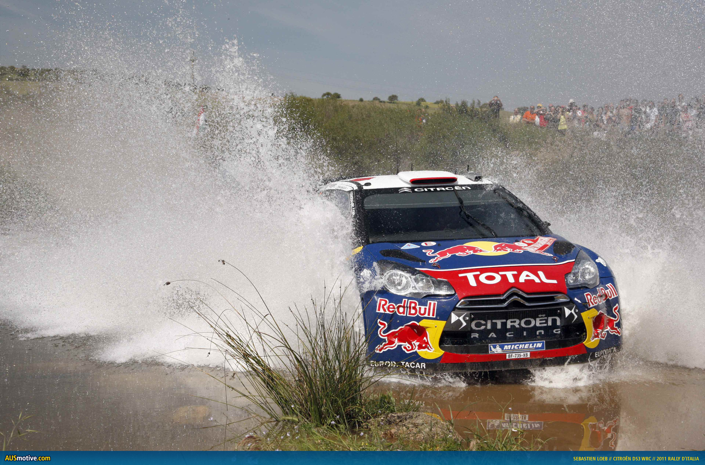

Site Personnel de Corentin Briand, |
>Données Personnelles :
|
Pour des raisons de volonté de conserver un minimum de discretion la majorité de ces informations seront "imprécises", merci de votre compréhension... Voici donc quelques données sur moi même :
|
Une petite image trouvée sur internet concernant les données personnelles |
> Etudes :
|
> Actuelles :
Je suis actuellement en 1ère année de licence Informatique à l'université de Versailles Saint Quentin en Yvelines (78) > Vous pouvez retrouver mes cours : ICI Passées :
|
logo de l'uvsq |
> Loisirs
| J'ai plusieurs loisirs, mais les principaux sont les jeux vidéos ( FIFA a 75%), L'informatique en générale... Le football ( Allez Paris !, Liverpool/ Arsenal ! et les ... Bleus !!!!!), Le modélisme ferroviaire, et plus rare mais cool aller voir des rallyes ! |

Sebastien Loeb |